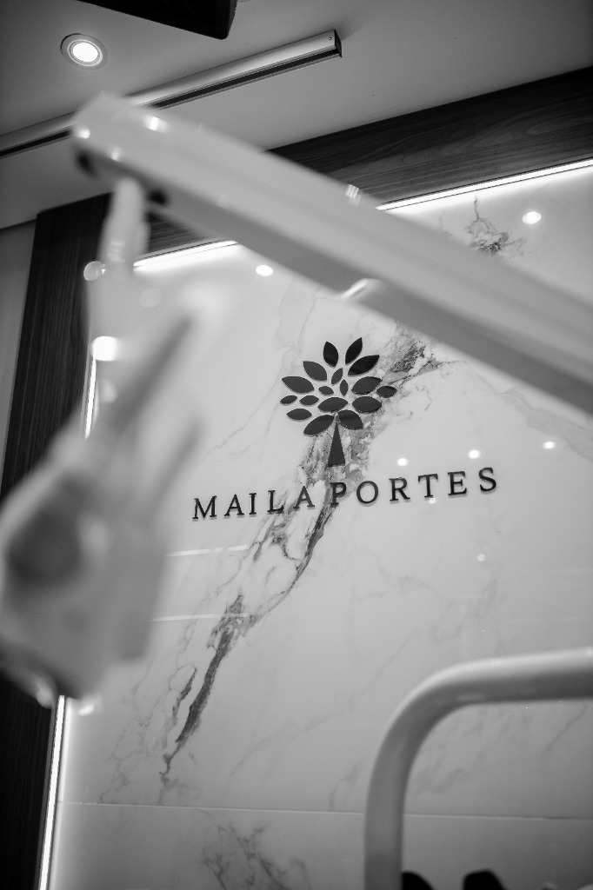
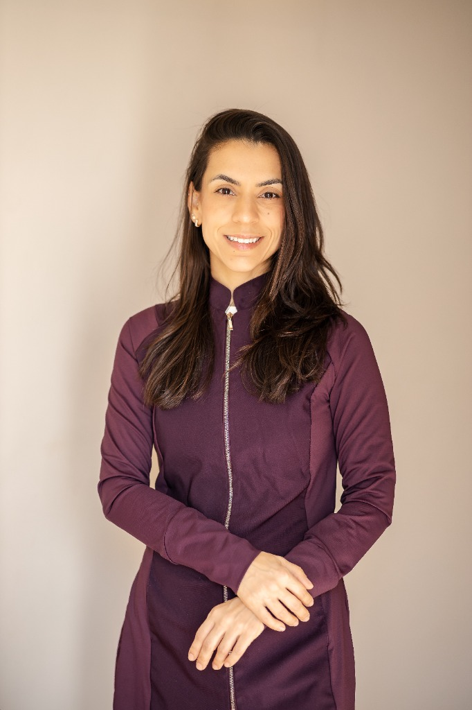
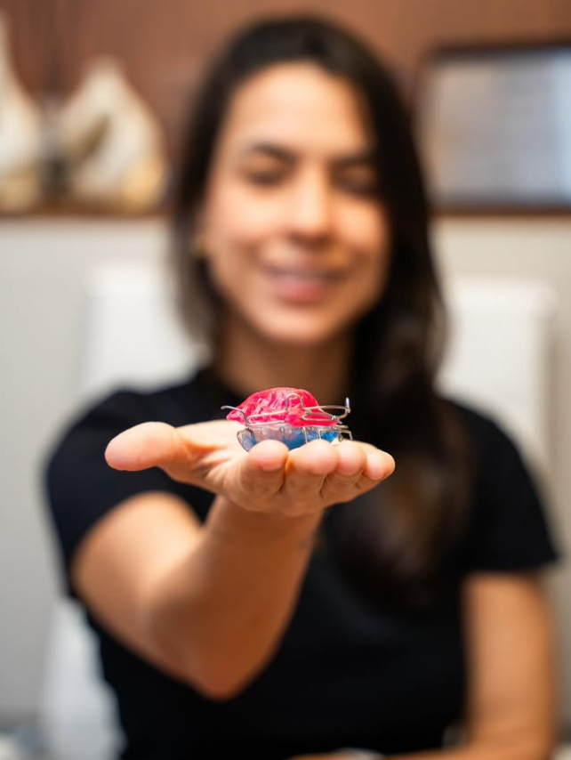
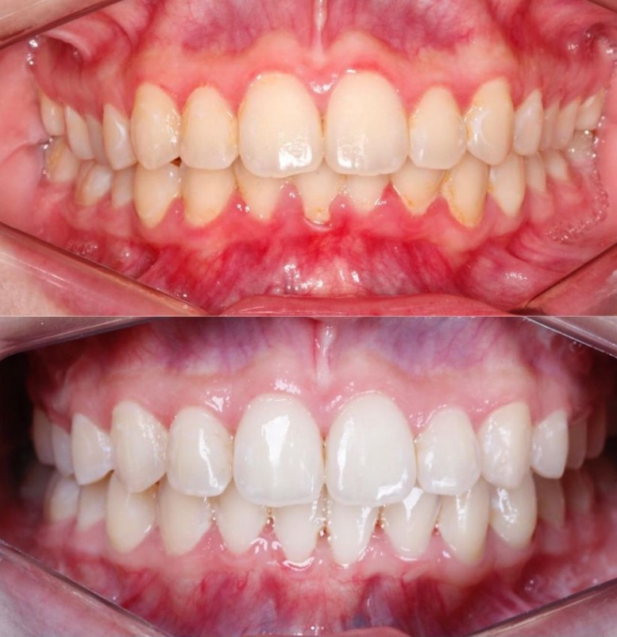
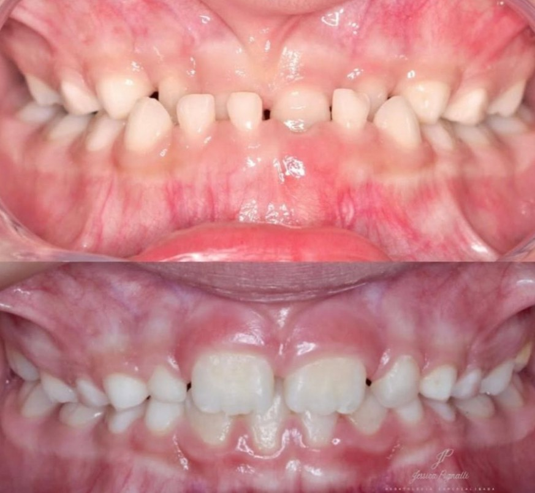
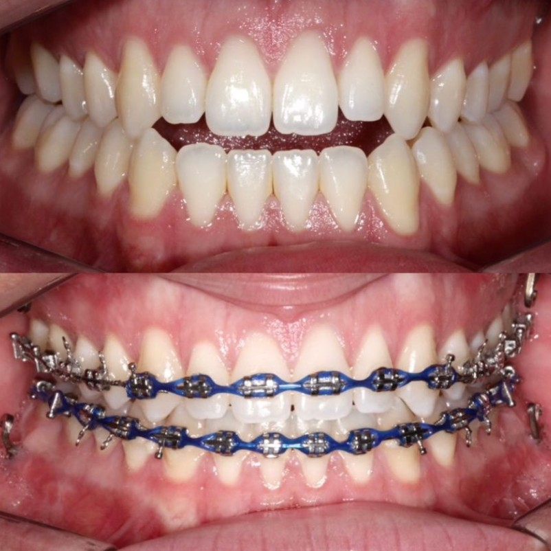
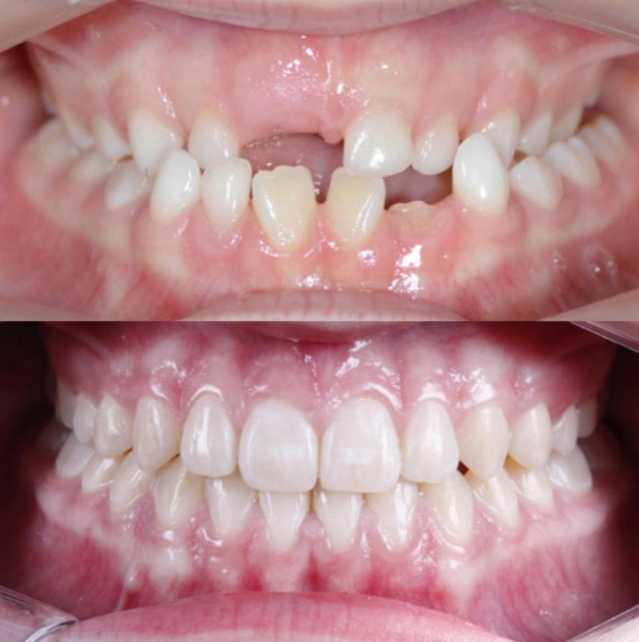
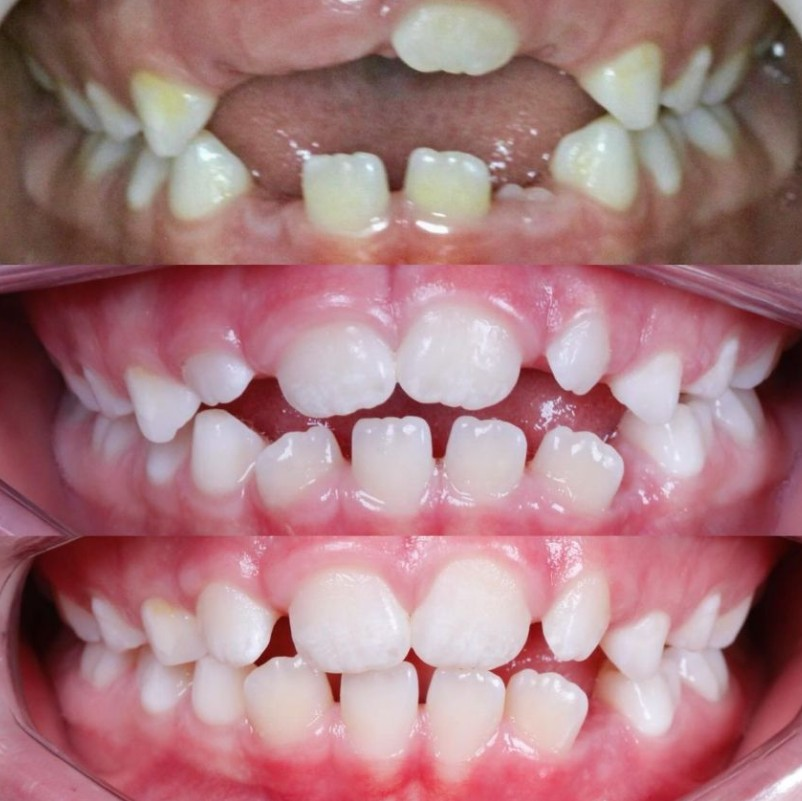

Cuidado, precisão e conhecimento para transformar sorrisos.
Atendimento odontológico especializado, com uma abordagem individualizada e baseada em conhecimento científico.

Conheça a Dra. Maila Portes
"Uma trajetória dedicada à Ortodontia, ao conhecimento e ao cuidado individualizado de cada paciente."
A Dra. Maila Portes alia anos de rigor acadêmico com uma prática clínica atenta e acolhedora. Seu trabalho tem como premissa o diagnóstico preciso, a biomecânica avançada e o respeito à individualidade de cada paciente.
Especialização em cada detalhe
Procedimentos conduzidos com rigor técnico, planejamento e foco em estabilidade e estética.
Ortodontia
Planejamento e acompanhamento ortodôntico individualizado, buscando equilíbrio, função mastigatória e harmonia estética.
Sistemas Ertty
Atuação especializada dentro da área de Ortodontia com foco em mecânicas avançadas e diagnóstico 3D detalhado.
Ortopedia Facial e Funcional
Abordagem voltada ao equilíbrio e desenvolvimento do sistema craniofacial, promovendo saúde estrutural e bem-estar.
Ortodontia com planejamento e propósito
"O tratamento ortodôntico vai além do alinhamento dos dentes. O planejamento considera cada paciente de forma individual, buscando equilíbrio entre estética, função e saúde."
Planejamento Minucioso
Análise de cada detalhe antes do início do tratamento.
Abordagem Científica
Técnicas baseadas em evidências e estudos contemporâneos.
Acompanhamento Próximo
Acompanhamento durante as consultas.
Harmonia & Função
Resultados funcionais duradouros e estética natural.

Transformações reais
Apresentação de resultados clínicos obtidos através de condutas personalizadas.
Clareamento Dental
Registro de um caso de clareamento dental realizado na clínica. A indicação e o planejamento do tratamento dependem de avaliação individual.
Falar sobre Clareamento

Correção de Mordida
Consultar sobre correção de mordida
Alinhamento Ortodôntico
Consultar sobre alinhamento ortodôntico
Reconstrução Dentária
Consultar sobre reconstrução dentária
Harmonia Funcional
Consultar sobre harmonia funcional* Resultados clínicos dependem de diagnóstico individual e podem variar de acordo com cada paciente.
Certificações e Titulações
Títulos acadêmicos e certificações especializadas que fundamentam a prática clínica da Dra. Maila Portes.
Doutorado (PhD) em Ortodontia
Certificado oficial
Mestrado (MSc) em Ortodontia
Certificado oficial
Especialista em Ortodontia
Certificado oficial
Sistemas Ertty
Certificação oficial
Um espaço pensado para você
"Um ambiente pensado para proporcionar uma experiência acolhedora, confortável e profissional em cada visita."
Localizado no bairro Bonfim em Campinas, o consultório foi planejado para oferecer máxima privacidade, tecnologia diagnóstica e um ambiente sereno e agradável.
Campinas • SP
R. Dr. Rafael Sáles, 954 — Bonfim
Atendimento Personalizado
Consultas com dedicação exclusiva
Agendamento Ágil
Contato direto via WhatsApp oficial
Cursos e Mentorias
Aprenda com quem é referência. A Dra. Maila Portes compartilha seu método e expertise em Ortopedia Facial e Funcional dos Maxilares para dentistas que buscam excelência clínica.
Mentoria em Ortopedia Facial e Funcional dos Maxilares
Abordagem completa de diagnóstico, planejamento e execução do tratamento. Aulas teóricas, discussão de casos clínicos e apresentação de seminários que desenvolvem o raciocínio clínico do aluno no dia a dia.
- Todas as maloclusões e possibilidades ortopédicas
- Protocolos de tratamento estruturados
- Discussão de casos clínicos reais
- Acesso online — estude no seu ritmo
Aperfeiçoamento em Ortopedia Funcional dos Maxilares
Curso de aperfeiçoamento reconhecido pelo MEC, com formação presencial na Unidade Campinas da São Leopoldo Mandic. Especialidade completa com 380 horas/aula e corpo docente de alta qualificação.
- 380 horas/aula de formação completa
- Presencial — Campinas/SP
- Estrutura curricular especializada
- Certificado reconhecido pelo MEC
O que nossos pacientes dizem
Relatos de pacientes sobre o atendimento e a experiência no consultório.
"Excelente profissional! Explica tudo com muita clareza, o atendimento é impecável e ainda é uma ótima professora. Super recomendo!"
"Dra Maila extremamente cuidadosa, atenciosa. Super competente, consultório lindo, aconchegante […]"
Antes da sua avaliação
Como solicitar uma avaliação?
Escolha o botão de contato, continue para o WhatsApp e envie sua mensagem. A clínica precisa confirmar a data e o horário: navegar pelo site não reserva uma consulta.
Quais áreas de atendimento são apresentadas pela clínica?
A clínica apresenta Ortodontia, Sistemas Ertty e Ortopedia Facial e Funcional. Também há casos de clareamento e reconstrução dentária nesta página. A indicação de um tratamento depende da avaliação individual.
Onde fica o consultório?
Na Rua Dr. Rafael Sáles, 954, bairro Bonfim, Campinas — SP, CEP 13073-021. Use o link de localização na seção de contato para planejar sua rota.
Quanto tempo leva para receber uma resposta?
O prazo informado pela clínica para responder no WhatsApp é de 20 minutos. Confirme com a equipe os dias e horários de atendimento. Esse prazo se refere ao retorno da equipe, não ao tempo de deslocamento até a clínica nem à confirmação de uma consulta.
Os resultados dos casos apresentados são garantidos para todos?
Não. As imagens mostram casos individuais. Os resultados e a duração de cada tratamento variam conforme o diagnóstico e o acompanhamento de cada paciente.
Canais de Atendimento
Converse conosco pelo WhatsApp, planeje sua rota até a clínica ou acompanhe nosso perfil oficial. O agendamento depende de confirmação da equipe. Prazo informado de resposta pelo WhatsApp: 20 minutos. Consulte os dias e horários de atendimento; esse prazo não corresponde ao tempo para chegar à clínica.
Fale diretamente com a clínica para agendamento e informações.
Localização
R. Dr. Rafael Sáles, 954 - Bonfim, Campinas - SP, 13073-021
Acompanhe publicações científicas e casos clínicos da Dra. Maila.